Stripe Subscription Cancelled: Auto-Email + Google Sheets Log (Make.com)
A customer cancels their subscription in Stripe. You find out three weeks later when someone finally checks the dashboard. By then, there's no chance of saving them — you don't know why they left, when it happened, or whether anyone followed up. This Stripe subscription cancelled automation fixes the blind spot: the moment a subscription ends, Make.com sends the customer a personal email, logs the cancellation with feedback data in Google Sheets, and alerts your team on Slack. Five modules, 25 minutes to build, runs forever.
Why Most Businesses Miss Subscription Cancellations
Stripe logs every cancellation — but logging is not the same as acting on it. The event sits in your Stripe dashboard alongside hundreds of other events, and unless someone is checking daily, it gets buried. The real cost is not the lost subscription itself. It's the lost information: why did they cancel? Was it price, missing features, or a competitor? Stripe actually collects this feedback through its Customer Portal — but the data stays inside Stripe where your sales and support teams never see it. A simple automation that pushes cancellation data to where your team already works — email, spreadsheets, Slack — turns a silent churn event into an actionable signal.
Doesn't Stripe Already Send Cancellation Emails?
Stripe can send automated emails for subscription events — but only if you configure them, and they come with significant limitations. Stripe's built-in emails are Stripe-branded and generic. Customers often mistake them for transactional noise or outright spam. You can't customize the tone, add a personal touch, or invite direct replies. And critically, Stripe's emails are one-directional: the customer gets a notification, but nobody on your team knows it happened. The automation in this guide sends the email from your own Gmail account — so it looks like a real person reaching out — and simultaneously notifies your team so someone can follow up while the cancellation is still fresh.
How the Stripe Cancellation Automation Works
When a customer's subscription is deleted in Stripe, Make.com catches the event instantly via webhook and runs five actions in sequence: it retrieves the customer's full profile (name and email), sends a personalized goodbye email from your Gmail, logs the cancellation details in a Google Sheets tracker, and posts a notification in your team's Slack channel.
Automation Flow — Step by Step
| Step | What Happens | Tool |
|---|---|---|
| 1 | Stripe detects a subscription cancellation | Stripe Webhook |
| 2 | Make.com retrieves the customer's name and email | Stripe API |
| 3 | Customer receives a personalized email from your Gmail | Gmail |
| 4 | Cancellation data is logged in Google Sheets | Google Sheets |
| 5 | Your team gets an alert in Slack with the details | Slack |
The whole scenario uses 5 operations per run. On Make.com's free plan (1,000 operations/month), that's enough to handle 200 cancellations per month — far more than most small SaaS businesses or freelancers will see.
Why You Need a Stripe Cancellation Workflow (Not Just Alerts)
A one-off Slack notification tells you someone left. A cancellation workflow tells you why they left, how much revenue you lost, and whether there's a pattern. The difference matters once you have 3-6 months of data in your Google Sheets log. You can filter by feedback reason and spot trends: if 40% of cancellations say "too expensive," that's a pricing signal. If most cancellations cluster around month 2-3, your onboarding has a gap. The Sheets log this automation builds is not just a record — it becomes your churn dataset. Some SaaS teams take this a step further and add a short exit survey link in the goodbye email instead of the "reply to this email" approach. That works at scale, but for most small businesses, the personal reply invitation converts better and requires zero additional tooling.
Build this automation on Make.com's free plan — 1,000 operations per month, no credit card required. Start free on Make.com →
Stripe Cancellation Feedback — Where It Comes From
Before building the automation, it's worth understanding how Stripe collects cancellation feedback. When a customer cancels through the Stripe Customer Portal, Stripe can show a feedback form asking why they're leaving. The customer selects a reason — too expensive, no longer needed, found an alternative, or other — and optionally adds a comment.
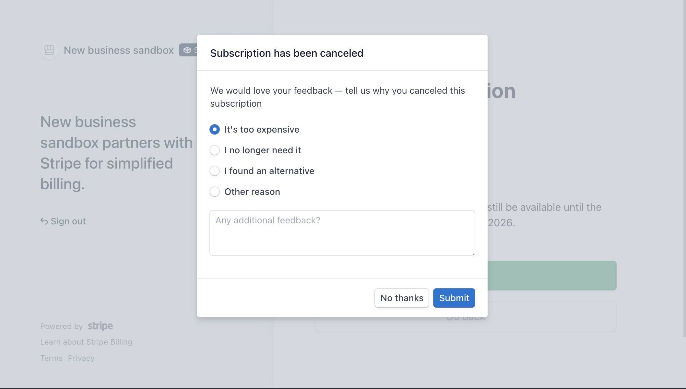
This feedback is stored in the webhook payload under cancellation_details.feedback and gets passed to Make.com automatically. You don't need to build a survey or add any extra tools — Stripe handles collection, and your automation handles distribution.
To enable cancellation feedback collection: go to Stripe Dashboard → Settings → Billing → Customer portal → Cancellations → toggle on "Collect a cancellation reason." If this toggle is off, the feedback field will arrive empty in your automation.
What You Need Before Starting
You'll need four things ready before opening Make.com. A Stripe account with at least one test subscription (sandbox mode is fine — no real payments involved). A Gmail account for sending the cancellation email. A Google Sheets spreadsheet called "Subscription Cancellations" with a sheet named "Log" and these column headers in row 1: Date, Customer Name, Email, Subscription ID, Plan Amount, Interval, Feedback, Reason. A Slack workspace with a notification channel — this guide uses #churn.
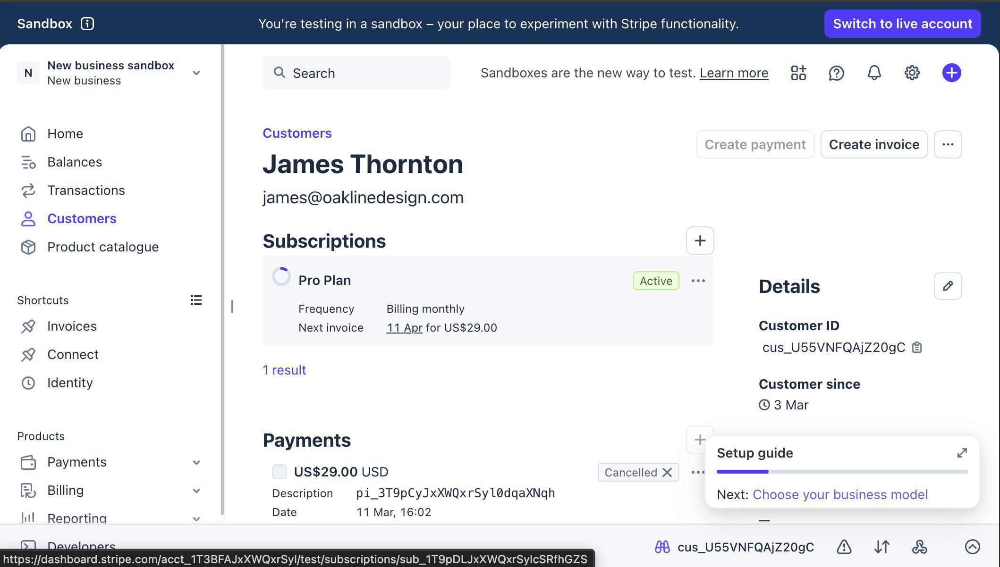
How to Build the Stripe Cancellation Automation
- Log in to Make.com and create a new scenario. Click the large + button on the canvas and search for "Stripe." Select the Watch Events module — this is an INSTANT (webhook) trigger that fires the moment Stripe sends an event, using zero operations while idle.
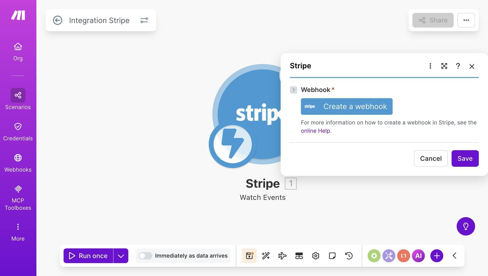
Make.com scenario canvas — Stripe Watch Events module with Create a webhook button - Click "Create a webhook" to configure the trigger. Set a name (e.g., "My Watch Events webhook"), connect your Stripe account, then select Group: "Customer - subscription" and Event: "Customer subscription deleted." This tells Make.com to listen only for subscription cancellation events — nothing else.
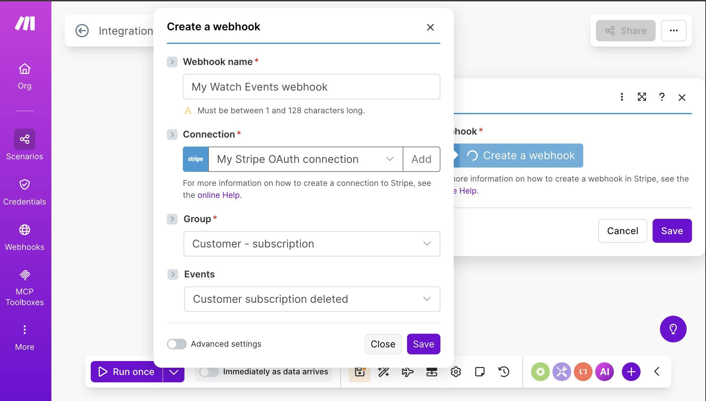
Make.com Stripe webhook config — Group set to Customer-subscription and Event set to deleted - 💡 Pro Tip: This webhook uses the Customer group, not the Invoice group. If you've built our Stripe failed payment automation, you used Invoice → Invoice payment failed. This one listens for a completely different event — customer.subscription.deleted — which fires when a subscription is actually cancelled, not when a payment fails. You can run both scenarios simultaneously on the same Stripe connection.
- Test the trigger by cancelling a test subscription. In your Stripe sandbox, go to Customers → select your test customer → find the active subscription → click the "..." menu → Cancel subscription. Choose "End of the current period" and click "Cancel subscription."
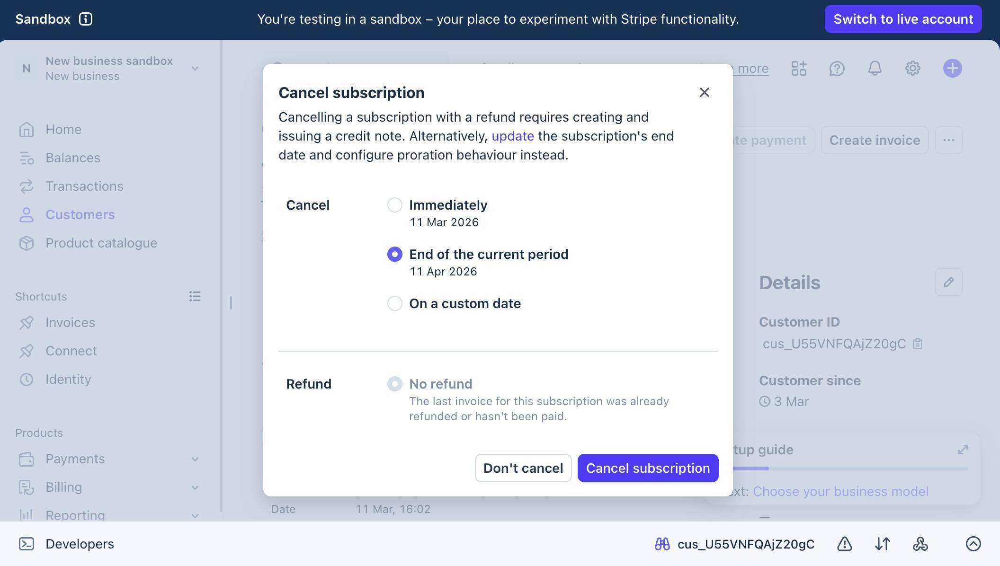
Stripe dashboard — Cancel subscription modal with End of current period selected - Return to Make.com — the Watch Events module should show a green checkmark with a "1" badge. Click the output bubble to inspect the data. You'll see the full subscription object including customer ID, cancellation timestamps, plan details, and cancellation_details with the feedback field.
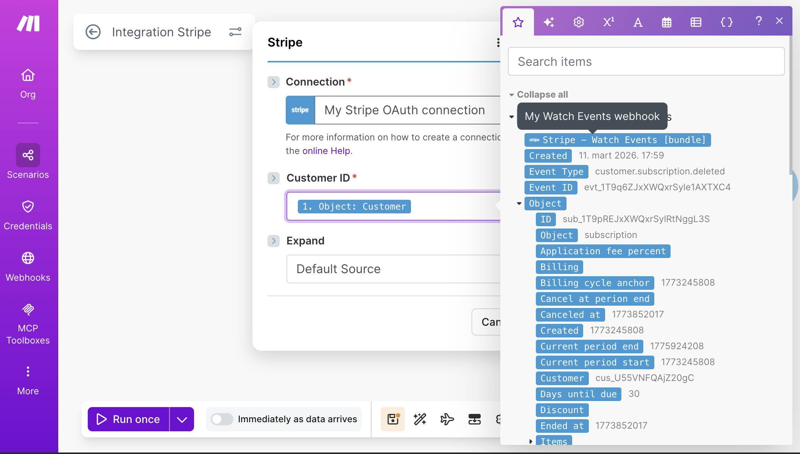
Make.com Stripe webhook output — subscription payload with customer ID and cancellation details - Add a Stripe "Retrieve a Customer" module. Click the + button after Watch Events and search for Stripe again. Select "Retrieve a Customer." When a subscription is deleted, the webhook payload includes the customer's ID but not their name or email. This module fetches the full customer profile so you can use their name and email address in the following steps.
- Map the Customer ID field. In the Retrieve a Customer configuration, set Customer ID to "1. Object: Customer" from the Watch Events output. This is the customer's Stripe ID (starts with cus_) that tells Make.com which customer profile to look up.
- Add a Gmail "Send an email" module. Click + and add Gmail. Connect your Google account when prompted. Set the To field to "2. Email" from the Retrieve a Customer module — this is the cancelled customer's email address.
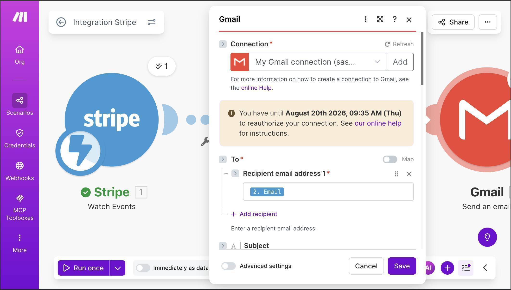
Make.com Gmail module — To field mapped to customer email from Retrieve a Customer - Configure the email subject and body. For the Subject, type "We're sorry to see you go — your" and then map "2. Discount: Subscription" to insert the plan name, followed by "subscription." For the Body, set Body type to "Collection of contents" and write a short, personal message using the customer's name from module 2.
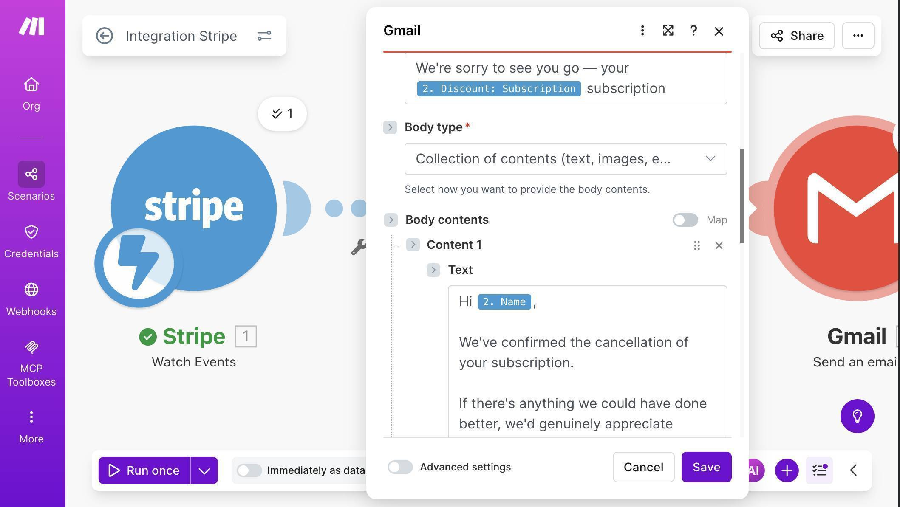
Make.com Gmail module — Subject with plan name and Body with personalized cancellation message - 💡 Pro Tip: Keep the email short and human. This is not a marketing email — it's a genuine acknowledgment. The template used in this guide confirms the cancellation, invites feedback through a simple "just reply to this email" line, and mentions the option to resubscribe. No links to surveys, no discount offers, no upsells. A reply-friendly email gets 3-5x more responses than a formal feedback form.
- Verify the email arrives. After running the test, check the inbox of your test customer. You should see a personalized email with the plan name in the subject line and the customer's name in the body.
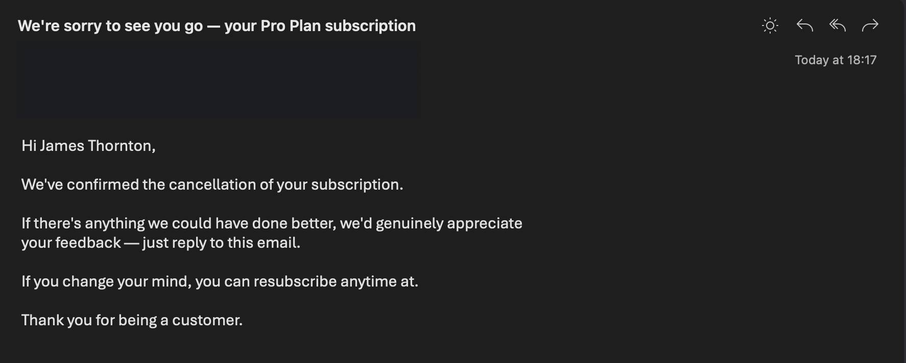
Email inbox — cancellation confirmation with customer name and plan details - Add a Google Sheets "Add a Row" module. Click + and add Google Sheets. Select your spreadsheet ("Subscription Cancellations") and sheet ("Log"). Make sure your spreadsheet already has column headers in row 1 — Make.com uses them to generate the mapping fields.
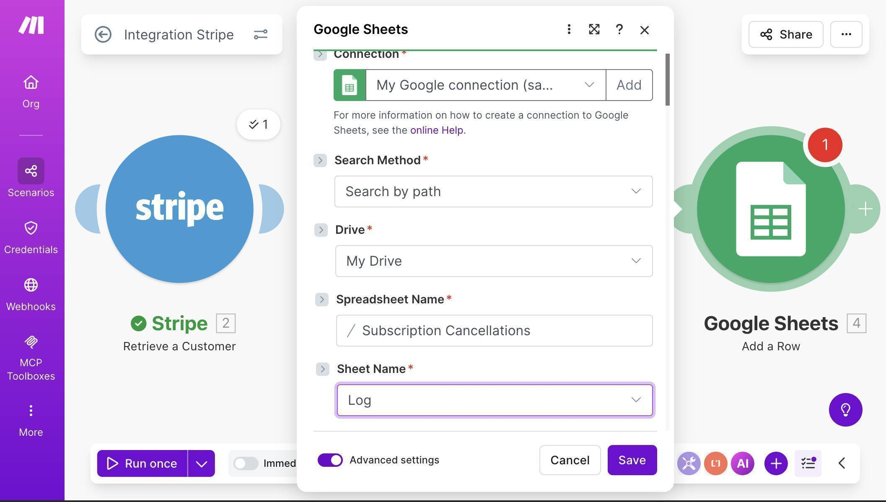
Make.com Google Sheets module — Subscription Cancellations spreadsheet and Log sheet selected - Map each column to the corresponding data. Date uses a formatDate formula: formatDate(1. Created; "MM/DD/YYYY") to convert the Unix timestamp into a readable date. Customer Name and Email come from module 2 (Retrieve a Customer). Subscription ID maps to "1. Object: ID". For Plan Amount, use the formula parseNumber(1. Object: Plan: amount_decimal / 100; ) to convert cents to dollars.
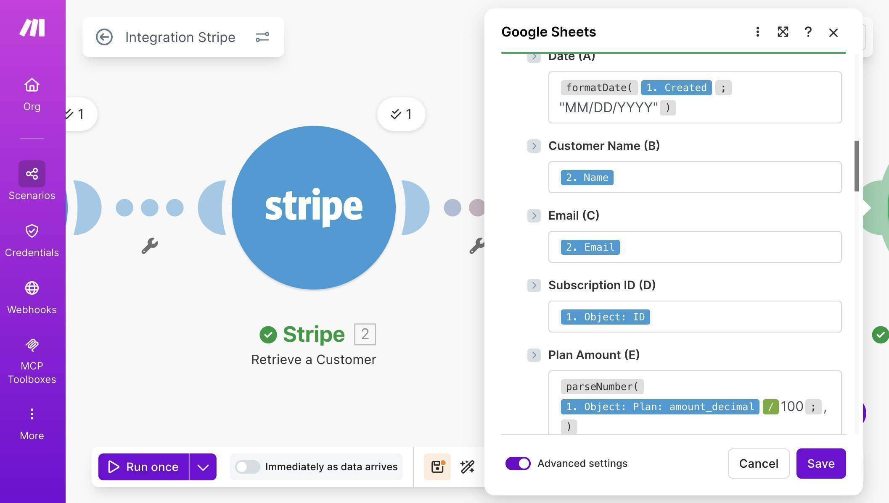
Make.com Google Sheets mapping — Date formula, Name, Email, Subscription ID, and Plan Amount fields - Add a Slack "Send a Message" module as the final step. Connect your Slack workspace, set Channel type to "Public channel" and select your #churn channel. In the Text field, compose a message using mapped fields — include the customer name, email, plan amount, billing interval, and feedback reason from the Stripe webhook data.
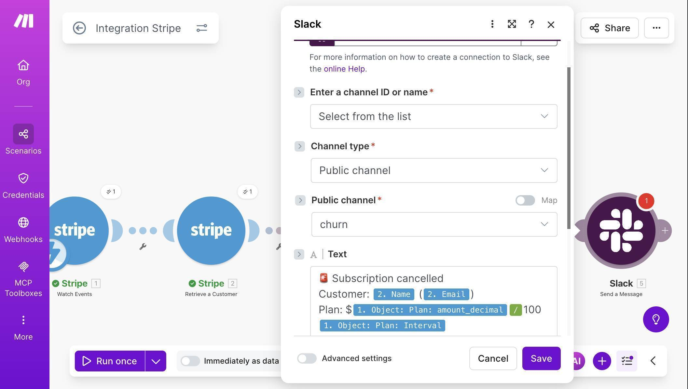
Make.com Slack module — churn channel selected with cancellation alert message template - Save the scenario and run a final end-to-end test. Your complete canvas should show five modules connected: Stripe Watch Events → Stripe Retrieve a Customer → Gmail Send an email → Google Sheets Add a Row → Slack Send a Message. Cancel another test subscription in Stripe to trigger the full flow.
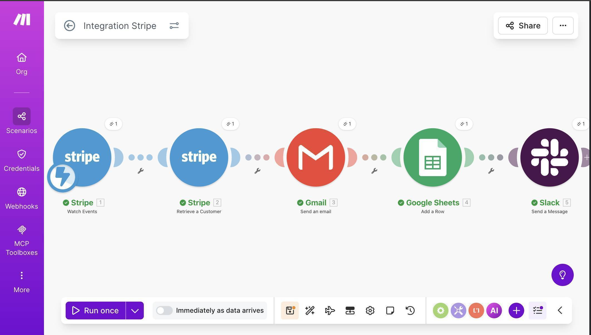
Make.com complete scenario — five modules connected with green checkmarks after successful test - Verify the results. Check three places: your Google Sheets "Subscription Cancellations" spreadsheet should have a new row with the cancellation date, customer details, subscription ID, and plan amount. Your Slack #churn channel should show the formatted alert. And the test customer's inbox should have the goodbye email.
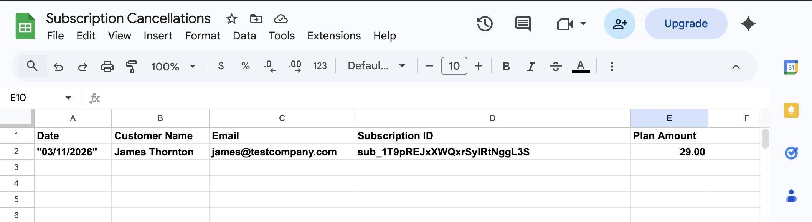
Google Sheets Subscription Cancellations — cancellation row with date, customer name, and plan amount 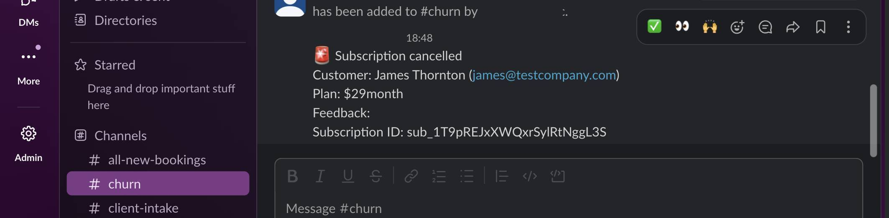
Slack churn channel — cancellation alert with customer name, plan, and subscription ID - 💡 Pro Tip: The Feedback field may appear empty in your test results — this is a known Stripe sandbox behavior. In production, when real customers cancel through your Customer Portal and select a reason, the cancellation_details.feedback value populates correctly with values like "too_expensive", "unused", or "switched_service". Your Google Sheets log will capture these reasons automatically once real cancellations come through.
Start building this automation on Make.com's free plan — 5 operations per cancellation means the free tier handles 200 cancellations per month. Start free on Make.com →
Frequently Asked Questions
Does this work for subscriptions cancelled by the customer and by the admin?
Yes. The customer.subscription.deleted event fires regardless of who initiates the cancellation — whether the customer cancels through the Customer Portal, you cancel it from the Stripe dashboard, or the subscription is cancelled automatically due to repeated payment failures. All three scenarios trigger the automation identically.
What happens if the same customer cancels and resubscribes multiple times?
Each cancellation triggers a separate run. Every event creates a new row in Google Sheets, sends a new email, and posts a new Slack message. Your spreadsheet becomes a chronological log of all cancellation events — useful for spotting repeat churners.
Can I add a cancellation feedback survey instead of the "reply to this email" approach?
Yes — you could link to a Typeform or Google Form in the email body. But for most small businesses, the reply approach works better. Customers are far more likely to reply to a short personal email than click through to a separate survey. Keep it simple until your volume justifies the complexity.
The Feedback field is empty in my Google Sheets row — is something broken?
Probably not. In Stripe's sandbox, the cancellation_details.feedback field often returns empty even when the customer selects a reason in the portal. This is a known sandbox limitation. In production with live subscriptions and real Customer Portal cancellations, the field populates correctly.
How many operations does this use on the free plan?
Each cancellation uses 5 operations (one per module). The Make.com free plan includes 1,000 operations per month, so this automation alone handles 200 cancellations. If you run other scenarios alongside it, subtract their usage — but most small businesses see 5-20 cancellations per month, which uses only 25-100 operations.
Can I use this alongside the Stripe failed payment automation?
Yes. Both scenarios run independently on separate webhooks. The failed payment automation listens for invoice.payment_failed events, while this one listens for customer.subscription.deleted. They don't interfere with each other and can share the same Stripe connection in Make.com. Together, they cover the two most critical subscription lifecycle events.